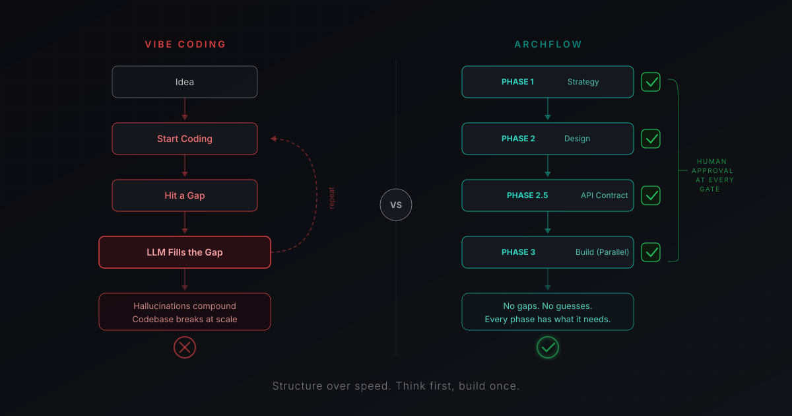

17 specialized agents across 6 phases, handing off through files in your repo — so context outlives the session that created it. Works on the codebase you already have.
Built and refined across 20+ real projects — including this one.
--scope project installs Archflow into this repo only, so it travels with the project instead of your machine.
Archflow plans and ships Archflow — the
.archflow/
directory is in
this repo.
A backend agent makes design decisions it shouldn't. Context disappears between conversations. There's no repeatable process.
You can build faster with AI. But only if the AI knows what it's working on, what it shouldn't touch, and where the last agent left off.
Built and refined across 20+ real projects. Every pain point became a fix.
That's not a knock — moving fast is the right call early on. But when an LLM hits a gap in context, it doesn't stop. It fills the gap with whatever looks right, and those guesses compound. Archflow closes the gaps before code is written, so what you build holds together as it grows.

17 agents, each scoped to one domain. A UX designer doesn't write backend code. An API engineer doesn't make design decisions. Deep expertise, not broad awareness.
Agents communicate through artifacts, not chat. The API contract becomes the single source of truth. Frontend and backend build against the same spec. Nothing gets lost between conversations.
6 phases from strategy to deployment. Nothing moves forward without your approval. No skipped steps. No autonomous decisions on what ships — even autopilot stops short of main.
product-strategist / feature-planner
ux-designer / dsl-generator
api-contract-architect
ui-engineer + api-engineer / qa-engineer
code-reviewer / performance-optimizer
devops-engineer / post-launch-analyst
Each phase loads only what the active agents need. Less noise. More focused results.
What each phase actually fixes
Your prototype works. People are using it. What it doesn't have is a roadmap, an API contract, a test plan, or a defensible answer to what 1.0 means.
Onboarding audits what you shipped and reconstructs the plan around it. Where it finds working code with no story behind it, it writes the story and marks it delivered — so your roadmap opens describing reality, not pretending you're on day one.
Then close the gaps that are costing you
Can't decide what to build next
Phase 1 — strategy, personas, KPIs
Every screen looks slightly different
Phase 2 — design system
Frontend and backend disagree about the API
Phase 2.5 — contract both sides build against
Scared to change anything
Phase 3 — tests and acceptance criteria
No idea if it's secure or fast enough
Phase 4 — review and optimization
No repeatable way to ship
Phase 5 — CI/CD, versioning, app store
What this does and doesn't do: you get the plan, contracts, and quality gates your prototype never had, and Phase 4 agents review code quality, security, and performance. Archflow will not silently rewrite your architecture. You decide what gets refactored — it makes sure you know what needs it.
Full guide: taking a prototype to productionMost AI workflows assume you're starting from scratch. This is the step that doesn't — here's exactly what it does to your repo.
Run /archflow:onboard and it dispatches up to 9 agents in parallel. They audit your code, import docs from Jira, Notion, Linear, GitHub, and Slack, reverse-engineer your design system and API contracts, and drop you into the right phase.
Answer 5 questions
Up to 9 agents analyze in parallel
Artifacts generated for your approval
New project? /archflow:init starts you at Phase 1.
Then don't run it. Archflow has two modes over the same schema, and new projects start in the light one.
One implicit release. Gates that record but never block. No ship ceremony until you ask for one. You still get agents, contracts, and phases — without the paperwork.
Explicit release pipeline, enforced readiness gates, role lanes for PM, design, architecture, and QA. Everything a second contributor makes necessary.
Same schema either way, so switching costs nothing. When Archflow notices you've outgrown quick — a second release, a second contributor — it offers the upgrade. It never forces it.
There are more, but this is what the loop actually looks like.
/archflow:status
Where the project stands, and what to run next
/archflow:feature
Add a story — capture it, or branch and build it now
/archflow:groom
Turn a backlog stub into a ready story with acceptance criteria
Plus, when you need them
/archflow:init
Start a new project at Phase 1
/archflow:onboard
Analyze an existing codebase
/archflow:release
Create, start, and ship releases
/archflow:mode
Switch between quick and full
/archflow:setup-mcp
Connect Jira, Notion, Linear, GitHub
/archflow:migrate
Upgrade a v1.0 project to v2.0
/archflow:autopilot
Build a release unattended, on one branch
Autopilot asks you everything it can’t decide alone up front — in one batch — then goes silent and builds story after story. One report in the morning.
The interview comes first: product behaviour, trade-offs, anything irreversible, each as a question with real options to pick from. Your answers are written to a run ledger before any code moves — so they survive the hours, and the context compactions, that follow.
Every blocker it can see in the queued stories gets asked while you’re still awake. Nothing it could have looked up in the API contract or design artifacts becomes a question.
A new decision at 3am doesn’t stall the night or get answered for you. The story is parked with the open question, its work committed but unmerged, and the run moves on.
Everything lands on one branch. No merge to main, no pull request, no deploy, nothing that costs money. You review a night’s work and merge it yourself.
What you wake up to
A parked story blocks the release until you answer it — a release doesn’t ship with an open product question inside it. Answer, then /archflow:autopilot resume picks up where it stopped.
Phases, agents, and roadmap structure adjust based on project type. Set automatically during onboarding.
That’s the right question, and for a while it was. Here’s what a prompt file can’t do.
CLAUDE.md tells the model how you’d like it to behave, then hopes it complies for the rest of the session. Archflow’s phases are state on disk — current-phase.yaml knows where you are, and the agent for that phase loads only that phase’s instructions.
A single instruction file means every agent carries every rule — the UX designer reads your API conventions, the API engineer reads your design system. 17 scoped agents each load what their own job needs. Less noise, and no cross-contamination of concerns.
The API contract, roadmap, and design system are artifacts in your repo. They diff in a pull request. A teammate can read them. Next month’s session reads them too. Chat scrollback does none of that.
/archflow:onboard audits an existing codebase and reconstructs the plan around it. No prompt file does archaeology.
Archflow is also made of files — plain markdown and YAML in .archflow/. If you want to fork the whole process and change every phase, that’s a text editor and a pull request. MIT.
Free and open source. MIT licensed.
New agents, phases, and integrations ship most weeks. Release notes and breaking changes only — no marketing.
The next release note will land in your inbox.